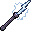
Stormcaller Staff
rareMagic
+30% Magic damage+10% Crit chance
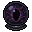
Void Orb
rareMagic
+42% Magic damage−10% Max health
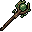
Wyrmsage Staff
rareMagic
+32% Magic damage+10% EXP gain+10% Healing
Galewind Staff
rareMagic
+28% Magic damage+12% Magic penetration+6% Crit chance
Azure Staff
rareMagic
+28% Magic damage+18% True damage
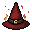
Pyromancer's Hat
rareMagic
+34% Magic damage+20% Magic penetration
Astral Hat
rareMagic
+38% Magic damage
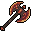
Executioner's Axe
rarePhysical
+26% Physical damage+150 Armor
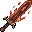
Molten Fury
rarePhysical
+28% Physical damage+15% Crit chance−10% Max health
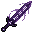
Chaos Blade
rarePhysical
+15% Physical damage+15% Magic damage
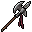
Berserker's War Axe
rarePhysical
+35% Physical damage
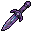
Crystal Ripper
rarePhysical
+24% Physical damage+20% Armor penetration+10% Max health
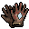
Piercing Fang Gauntlets
rarePhysical
+20% Physical damage+35% Armor penetration+150 Armor
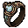
Duelist's Signet
rarePhysical
+18% Physical damage+10% Crit chance+1% Lifesteal
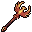
Firebird Staff
rareSupport
+18% Healing+2% Lifesteal
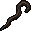
Crescent Crook
rareSupport
+20% Healing+150 Magic resist
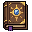
Tome of Insight
rareSupport
+16% EXP gain+8% Crit chance
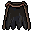
Penitent's Cloak
rareSupport
+150 Armor+18% Healing
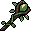
Staff of Renewal
rareSupport
+25% Healing+5% EXP gain
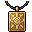
Adventurer's Crest
rareSupport
+15% EXP gain+10% Max health
Dragonscale Shield
rareTank
+20% Max health+10% Physical damage
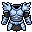
Bulwark Plate
rareTank
+25% Max health+10% Healing
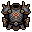
Juggernaut Carapace
rareTank
+450 Armor+15% Max health−10% Physical damage
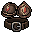
Brawler's Harness
rareTank
+250 Armor+10% Physical damage+8% Crit chance
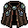
Spellturner Mantle
rareTank
+300 Magic resist+15% Magic damage
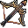
Truthseeker's Bow
rareTrue
+40% True damage+8% Crit chance
Crystal Longbow
rareTrue
+50% True damage
Ascetic's Staff
rareTrue
+150 Armor+150 Magic resist+22% True damage